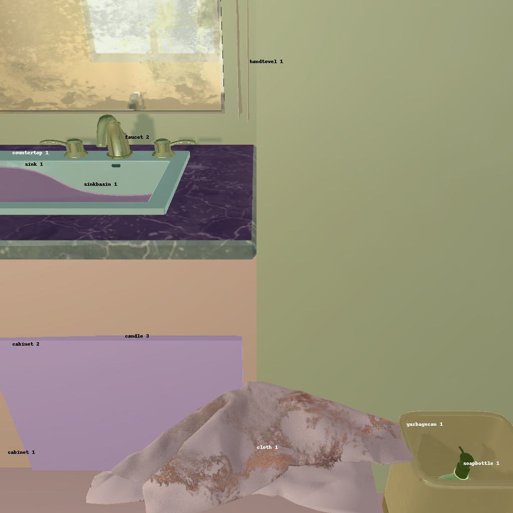

---------------------------------------------------------task: 11---------------------------------------------------------
--------------------------------------------------------------------------------------------------------------------------------------------------------------------
--------------------------------------------------------------------------------------------------------------------------------------------------------------------
Step:--------------------------------------------------------------------------11-------------------------------------------------------------------------------
----------------------------------------
VLM Prompt:
Image1:
Image2:
Image3:
**Instruction**
1. Analyze the provided image to identify all visible household objects, focusing on those relevant to the task description "clean some soapbar and put it in bathtubbasin."
2. Use the analysis of the image and the task hint "The agent must find an object of the desired type, pick it up, go to a sink or a basin, clean the object with a sink or basin, and then find the correct location to place it and put it down there. The agent does not need to use soap bottle or faucet to clean the object, and the agent just needs to do action that is "clean the object with the sink or sink basin"." to answer the question: what is the most reasonable action in the choices for the task description "clean some soapbar and put it in bathtubbasin"?
4. Decide and write the answer using the template: The answer is: (i): , where i is the real number. If there is no desired object in the image, search every place based on **Initial Observation** to find the object. And if no one is exactly correct, choose a similar answer.
**Initial Observation**
You are in the middle of a room. Looking quickly around you, you can see bathtub (1), bathtubbasin (1), toilet (1), cabinet (1-2), countertop (1), sink (1), sinkbasin (1), garbagecan (1)
**Answer Choices**
(1): go to bathtub 1
(2): go to bathtubbasin 1
(3): go to toilet 1
(4): go to cabinet 1
(5): go to countertop 1
(6): go to sink 1
(7): go to garbagecan 1
(8): open cabinet 2
(9): close cabinet 2
(10): put cloth 1 in/on cabinet 2
(11): examine cloth 1
(12): examine cabinet 2
**Answer**
Let's think step by step by following the instructions.
----------------------------------------
----------------------------------------
Original Response:
First, we need to identify all visible household objects relevant to the task description "clean some soapbar and put it in bathtubbasin."
From the images, we can observe that there is no soapbar visible. Therefore, we need to search every place based on the initial observation to find the soapbar. The places we can search are the bathtub, bathtubbasin, toilet, cabinets, countertop, sink, sinkbasin, and garbagecan.
The task hint tells us that the agent must find an object of the desired type (soapbar), pick it up, go to a sink or a basin, clean the object with a sink or basin, and then find the correct location to place it and put it down there. Since we cannot see the soapbar, the first action should be to search for it.
The most reasonable action from the choices provided, to begin with, would be to look for the soapbar in places where it is likely to be kept, such as cabinets. Therefore, the first step should be to open cabinet 2 where we might find the soapbar.
The answer is: (8): open cabinet 2.
----------------------------------------
----------------------------------------
>>> Refine Original VLM Response and Get Pure Action: open cabinet 2
----------------------------------------
-----------------------------------------------------------------
Running time: 12.682693004608154 seconds
Total Money: 6.697510000000001
-----------------------------------------------------------------
-----------------------------------------------------------------
Text Observation:You open the cabinet 2. The cabinet 2 is open. In it, you see a faucet 2, a spraybottle 2, a handtowel 1, a soapbottle 1, and a candle 3.
-----------------------------------------------------------------
UNSUCCEED